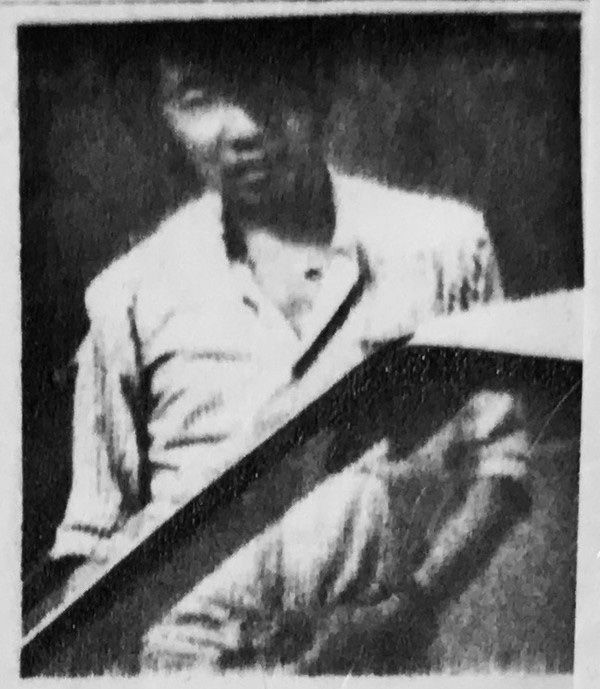

当时的日本几乎没有人认识这个愣头青，也没有人知道他做的是什么音乐。事实上，鎌田忠在广告中声称的 DD Records 与其说是一个音乐厂牌，不如说是一个隐藏在大学校园里的手工音乐作坊。它起源于日本当年的一本通讯杂志 PUMP 上的一个磁带交易小组。1980 年，鎌田忠通过它结实了一批口味相似的音乐爱好者，其中包括远在山口县的吉松幸四郎和 F. Yasumura，这些人后来大都为 DD Records 录制过磁带。这些来自日本不同地区的大学生，通过邮件交换着各自的西方摇滚收藏，其中既有能够在主流唱片店买到的磁带，也包括了当时在日本地下音乐圈隐秘流传着的各种另类摇滚和前卫摇滚。很快，鎌田忠便提出建立一个「幻影厂牌」的想法。所谓「幻影厂牌」，本质上就是通过 DIY 的方式少量制作磁带拷贝或车床切割的手工黑胶，然后再通过邮购的方式贩售音乐的私人作坊。如今不少 Bandcamp 上的厂牌和独立艺人，都采用了类似的方式制作唱片。由于当时一盘空白的磁带只需要 100 日元左右就能购买到，鎌田忠的这个想法得到了磁带小组不少人的支持。他们纷纷将自己在房间里录制的音乐寄给鎌田忠，积攒到一定数量后，鎌田忠开始在杂志和报刊中刊登邮购广告，DD Records 应运而生。除了最初的几张 7 寸黑胶是委托 Athene Record 公司限量压制，DD Records 绝大部分发行都是以磁带为载体。只有当顾客通过杂志社订购，鎌田忠才会使用磁带机实时复制所订购数量的拷贝。而磁带拷贝的封面和插画，则都是由鎌田忠亲自设计绘制，并使用 Xerox 黑白复印机翻印，再手工的裁剪而成。
Marquee Moon 杂志封面
现在我们已无从得知有多少人通过 Marquee Moon 订购了 DD Records 的唱片和磁带，但从目前的二手唱片市场来看，数量极少。但这并没有浇灭鎌田忠对于前卫音乐的热情，其后的几年里，DD Records 吸引了一批学生和地下音乐人，这些年轻人使用 Tascam 244 四轨道磁带录音机，在鎌田忠的帮助下制作发行了超过两百张的磁带，风格涵盖合成器流行、新浪潮、极简冷潮、环境音乐和实验噪音等。每一张磁带都附有鎌田忠所设计和复印的淡黄色拼接画封面和插页。这些风格统一的黑白拼贴画的尺寸大致为 5 英寸 × 7 英寸，其中既有乐手们模糊过曝的自拍和静物照，也有从各种书籍、学术期刊中翻印的风格各异的插画和数学公式。鎌田忠所制作的这些磁带封面，像一组层次感极度丰富又意义不明的诗；其精心设计的英文字体和复制印刷品粗粝的颗粒感，又形成了一种富有冲击力的独特美学。即便以今天的眼光看，这些印刷品也闪耀着蓬勃的生命力，让人对其包装下的音乐产生浓烈的兴趣。
1984 年鎌田忠从山梨大学毕业，回到了名古屋的父母家中，在那里他继续从事着自己的音乐制作事业。一年后，DD Records 戛然而止，鎌田忠毫无征兆地停止了他的音乐活动，就此消失在了人们的视野当中，没有人知道他去了哪里。有人说他后来成为了一名颇为成功的遗传学家，这个故事的真实性存疑，也无从考证。和鎌田忠一样，在 DD Records 旗下发行过磁带的音乐人大都在之后销声匿迹，这个厂牌就像没有存在过一般，只留下幻影般的、数量不明的磁带，散落在这个世界各个神秘的角落。
考虑到 DD Records 按需制作的发行模式，和其相对短暂的存在时间，这些音乐不出意外将会消失在历史的长河中。很长一段时间里，DD Records 的故事就像一个传说一般隐秘地流传在日本地下音乐圈，但很少有人真的听过那些磁带，人们甚至怀疑它是否真的存在过。然而事情在 2013 年初发生了戏剧性的转机，一位神秘的德国人在一篇日本地下音乐的博文的评论栏中发布了关于 DD Records 的内容详实的信息，其中包括了一份相对完整的唱片目录，涵盖了 DD Records 在 1980 年至 1985 年间发行的超过 180 张磁带。这份煞有其事的目录在互联网时代首次证实了 DD Records 的存在，将这个尘封近三十年的地下音乐厂牌从历史的黑洞里拽了出来，让人们对这个谜一样的地下音乐传说兴趣大增。
V.A. - Disk Musik (1985)
随后，这个德国人在评论中声称，自己还拥有一份 DD Records 发行于 1985 年的 12 寸合辑 Disk Musik 的 MP3 档案，并留下了自己的电邮地址，表示愿意与来信的网友分享。就这样， Disk Musik 的音源在网络上流传开，成为了许多人听到的第一张来自 DD Records 的唱片。作为 DD Records 五年多生涯中发行的唯一一张 12 寸黑胶，Disk Musik 是一张「非典型」的 DD Records 作品。首先，它拥有比 DD Records 手作磁带更简约的设计——封面为中村照夫所拍摄的主题为铁轨的黑白照片而非拼贴画，字体采用了打印体而不是手写——以及更高的制作成本，这很可能是鎌田忠在结束 DD Records 之前的想要完成的一桩愿景——为 DD Records 留下一张真正意义上的 LP 唱片。其次，参与录制这张合辑的一些音乐人，此前从未在 DD Records 发行过磁带，包括 A 面第一轨的作者 Circadian Rhythm，B 面第三曲的作者田畑佳樹，以及 B 面第五曲的作者——一个叫「年轻的荷尔蒙」的乐队。更为重要的是，这张合辑唱片的风格跨度非常大，两曲之间的反差往往导致听感的割裂，十分挑战聆听者对不同前卫音乐风格的耐受度。虽然 Disk Musik 的种种特殊性使得它很难代表 DD Records 卷帙浩繁的两百多张磁带录音，但它的的确确为我们提供了管窥 DD Records 神秘的手作音乐的一个切口。
鎌田忠给 Archie 寄去了 DD Records 所有的磁带样品，以便他能够在电台节目中播放这些音乐。Archie 为这些作品的高水准所折服，在 EUROCK 上分两次刊登了 180 张左右的 DD Records 磁带邮购目录。美国的订单经由 EUROCK 辗转至日本，再由鎌田忠实时制作相应数量的拷贝并寄送给 Archie。鎌田忠自掏腰包承担了邮寄磁带的费用，使得 Archie 能够以六美元一张的低廉价格售卖这些拷贝。用鎌田忠在广告中的话说，DD Records 旨在制作高质量的音乐，而不是为了赚钱。
虽然 EUROCK 刊登 DD Records 的广告时已是 1984 年前后，当时鎌田忠已经在日本国内制作发行了超过 180 张唱片，但将 DD Records 销往海外的想法可能在厂牌创立之初便已经成型了。证据之一便是从鎌田忠设计的第一张 DD Records 磁带开始，外页和内封都使用了全英文的设计，他甚至把自己稍显冗长的罗马名简写为 T. Kamada，以迎合西方人姓氏后置的习惯。毫无疑问，无论从音乐形态，还是营销思路上，鎌田忠都远远领先于他所处的时代。虽然当时日本已经出现了诸如非常階段（Hijokaidan）这样的先锋乐队，但能够凭借一己之力把一批由大学生和业余音乐人发行的手作磁带销往海外，在当时的日本却是闻所未闻的。
这份重见天日的 EUROCK 邮购目录和 Disk Musik 的释出使得来自世界各地的前卫音乐爱好者开始越来越多地谈论 DD Records，人们迫切地想要听到 DD Records 所发行的那两百多张磁带。此后的几年里，数量极少的 DD Records 的磁带开始在各个二手交易平台上流通，其中大都价格不菲。虽然这并没有对更广泛的人群获取这些音乐带来实质性的帮助，却加速了网友对 DD Records 的历史进行补全。有幸买到 DD Records 唱片的人们将这些磁带和内页的照片和扫描件上传到互联网，并详细地记录了每盘磁带的曲目和音乐风格。在几年的时间里，这些人在 Discogs 上维护起一份内容详实的关于 DD Records 的厂牌地图，其中丰富的图片资料让人们得以领略到了鎌田忠的磁带设计拼接美学。
DD Records 发行的第一张磁带 DT01：Home Made Music 1980/1
即便如此，在那之后的很长一段时间里，想要听到 DD Records 的磁带依然十分困难。直到 2017 年，互联网上流出的磁带录音也仅有鎌田忠分别于 1981 年、1982年发行的 Home Made Music 1981/4 和 After Music，前者是一盘长达 42 分钟的无人声的合成器流行唱片，后者则是一张 47 分钟的暗潮风格的环境音乐。
Home Made Music 是 DD Records 早期的一个系列，事实上 DD Records 发行的第一盘磁带就叫 Home Made Music 1980/1，其标题某种意义上表达了鎌田忠当时制作音乐的状态。1981 年，DD Records 总共制作了五张 Home Made Music 系列，编号从 1980/1 到1981/4。可惜的是除了之前提到的 Home Made Music 1981/4 之外，其余的四张至今都没有数字资源流出。我们仅能够通过 Discogs 上的资料猜测，这些录音很可能是实验性非常强的极简暗潮或冷潮电子乐，但也可能不是。
Home Made Music 1980/1 磁带内页
即便仅能听到 DD Records 的两张磁带录音，其中的丰富的信息量已经足够令人兴奋了。发行于 1982 年的 After Music 编号为 DT45，这是鎌田忠在噪音音乐维度上做出的一次尝试，风格与收录在 Disk Musik 中的鎌田忠作品 Muzikapart (2) 接近。After Music 显而易见地受到了 Tangerine Dream、Asmus Tietchens、Brian Eno 和 Lou Reed 等人的影响，这些音乐人毫无疑问是当年日本地下音乐圈中最潮流、最先锋的模板。
与 After Music 中阴暗、潮湿又延绵不绝的重复音律不同，Home Made Music 1981/4 中的乐曲十分明快，带有强烈的 Gary Numan 痕迹，和新浪潮初期神经质的稚气。整张录音在一个极其扁平的声学空间中，以合成器为轴心，拓展出了创造性和可听性都极其丰富的音乐。Fruit Waltz 中那种简洁工整、层层递进的风琴音效的合成器旋律配上一成不变的鼓机，虽然听上去有些许俗丽、缺少先锋质感，但这样粘稠、充满怀旧的思乡感伤的纯粹律动，要直到 1987 年才能再次在英国的另类民谣乐队 Band of Holy Joy 的唱片里听到。
或许是这两盘磁带音源的释出将这一小群人对 DD Records 热情带回了日本。2018年，一个 ID 为 k_yoshimatsu2004 的日本人在 Discogs 上发布了一系列 YouTube 链接，内容竟然是二十余张此前从未出现过的 DD Records 的磁带录音。这二十多张磁带的职员名单上都有一位名叫吉松幸四郎 (Yoshimatsu Koushirou) 的乐手，而k_yoshimatsu2004 这个 ID 的拥有者也正是吉松幸四郎本人。在鎌田忠当年刊登于 EUROCK 的广告中，附有一张 DD Records 旗下音乐人的列表，吉松幸四郎的名字紧随厂牌创始人鎌田忠之后，后面还附有一句大概率出自鎌田忠之手的介绍：「一位坚忍的吉他手，他的目标是将欧洲美学与东方吉他、合成器音乐相结合。」
吉松幸四郎(Yoshimatsu Koushirou)
吉松幸四郎是最早一批通过通讯杂志结识鎌田忠的乐手。1980年，当时的吉松还是山口大学社会心理学系的学生，他在山口大学工作的友人 F. Yasumura 给他推荐了 PUMP 上的磁带交易小组。作为前卫摇滚爱好者的吉松拥有不少音乐磁带，他很快加入了磁带交易小组，并成为了 DD Records 最早的贡献者。他在五年的时间里，把自己的卧室当作录音室，用一台四轨磁带录音机、吉他、鼓机和时序器录制了超过三十张磁带作品，风格横跨合成器流行、新浪潮、极简冷潮和前卫摇滚。他把这些磁带作品免费寄给了远在山梨县甲府市的鎌田忠，再又后者进行编号、复制和发行。
吉松幸四郎上传到 YouTube 的二十余张 DD Records 录音，覆盖了其在 1981 到 1985 年间以 K. Yoshimatsu、Juma 和 Setuna 的名义制作的大部分磁带。此外，吉松幸四郎同时还上传了自己在 DD Records 停滞后于自创厂牌 Villa Blanca 发行的两张专辑。大学毕业后的吉松幸四郎离开了山口，前往广岛从事独立电影拍摄活动。同他的音乐作品一样，吉松幸四郎将他的大部分电影作品上传到了自己的 YouTube 频道，这些独立制作的影片大都模糊了纪录片和剧情片的界限，就如同吉松的音乐作品一样，在即兴与编排之间找寻一种微妙的平衡。2009 年至 2012 年间，吉松开始在广岛的场所尝试一些实验性质的音乐现场，在那里他试图将自己的影像经验与音乐相结合，部分的演出的录影能够在吉松幸四郎的 YouTube 频道中看到。
吉松幸四郎上传的部分 DD Records 磁带
即便已经远离 DD Records 三十多年，吉松幸四郎此次回归乐迷的视线依然意义非凡。他亲手数字化的这些磁带，是拯救这些处于灭失边缘的历史音源的重要一步，在鎌田忠和当年的大多数 DD Records 音乐人不知散落何方的今天，他的出现让人们看到了再版这些珍贵录音的一丝曙光。
2019 年，纽约布鲁克林的地下音乐厂牌 Bitter Lake Recordings 联系到了吉松幸四郎，他们从吉松在 DD Records 以 Juma 的名义发行的全部六张磁带中，遴选了九轨录音，压制了 250 份双张黑胶唱片。这套双张唱片被 Bitter Lake Recordings 命名为 Selected Works By Juma，在 Bandcamp 上进行销售。这是吉松的作品首次被黑胶化，他的音乐也借由 Bandcamp 被更多的人所知。
Selected Works By Juma (2019), Bitter Lake Recordings
然而事实上这并不是 DD Records 唱片的首次再版，时间往回推一年，一位名叫春日井直樹 (Naoki Kasugai）的实验音乐人于自己位于名古屋的厂牌 Daytrip Records 推出了一套五张的黑胶唱片 DD. Records Works 1983-84，限量两百套。直樹于 1983 年至 1984 年间短暂地与 DD Records 合作，发行了七张磁带，其中四张冠名在一个叫 These 的项目下，其余三张则使用了直樹的本名。这套黑胶唱片几乎囊括了直樹在 DD Records 时期的所有作品，他用当年留下的磁带重新制作了母带，据说音质得到了一定提升。但由于磁带的保存状况不佳，导致一部分曲目受损，直樹不得不对七张磁带进行重新整理和组合，去掉了一些不完整的曲目，最终呈现出五张和原作曲目顺序完全不同的黑胶唱片。
直樹的这套黑胶再版发行时非常低调，最初仅能通过电子邮件订购，后来增加了 Art Into Life 厂牌网店的销售渠道。唱片很快售罄，但由于并没有海外和数字版发行，这套再版在很长一段时间里都不为人所知。目前春日井直樹仅在 YouTube 释出了一首长度为四分钟的单曲 Dadaism，来自 DD Records 1984 年发行的磁带 The Sunday，编号为 DT163。其余的作品，依然只能通过几乎绝迹的原版磁带和再版的 250 套聚乙烯唱片来听到。
春日井直樹 - DD. Records Works 1983-84 (2018), Daytrip Records
和吉松幸四郎不同，DD Records 停摆以后，春日井直樹的音乐活动从未间断过。1985 年，春日井直樹自立厂牌 Plant Music Collections，也就是 Daytrip Records 的前身。同年直樹化名为 Switch 与键盘手毛利伊作 (Isaku Mouri) 合作，发行了一张名为 No, Dance! 的合成器风格作品。毛利伊作曾在 DD Records 时代与春日井直樹组成一支名叫 KM2 的团体，发行过一张磁带，其中的歌曲也被收录在了 DD. Records Works 1983-84 黑胶中。 No, Dance! 的初版很可能也是按需复制，现存数量极少。2019 年 Daytrip Records 曾再版过这张磁带，但也只做了 35 份。
Switch - No, Dance! (1985), Plant Music Collections
80 年代末期的春日井直樹开始玩起了迷幻摇滚和酸民谣，他连续出版了 What In The Psychedelic Worlds?? 和《大理石的爱情世界》两张迷幻风格的专辑，并短暂地组过一个名叫牛若丸的朋克乐队。1998年，春日井直樹在名古屋开了一家名叫 Tsurumai DAY TRIP 的 live house，专注于迷幻和噪音风格的现场演出。随后 Daytrip Records 这个独立厂牌便植根于这家 live house 的土壤应运而生。Daytrip Records 早期发行了大量的记录 Tsurumai DAY TRIP 现场演出的 VHS 录像带和刻录光盘，这些音像制品大多以演出门票赠品的形式发放给观众。春日井直樹采用相对廉价的音像存储介质，在日本的前互联网时代成功地复刻了一个线下版的 YouTube 频道。
2018 年，已从 live house 老板的位置上退休的春日井直樹开启了一个野心勃勃的实验音乐项目 —— WALK。他从当年的十一月开始，几乎每天外出步行一个小时，使用随身携带的录音设备采集环境音和自己的脚步声，并记录下当天的步行区域、天气和温湿度，制作成磁带或刻录光盘发行。这个系列目前为止已经发行了超过三百五十张录音，且暂时没有停止的迹象。
春日井直樹是已知的 DD Records 遗老中，在实验音乐和独立制作的维度上走的最远的一位艺术家。多年来，春日井直樹坚持在自己的家中录音、混音和制作，并用和 DD Records 时期类似的拼贴画技法制作封面和插页，连发行和销售也亲自操办。这些努力都极大地降低了音乐制作的成本，并使得音乐的独立性不会被繁杂的唱片工业流程所阻碍。他的音乐活动继承了鎌田忠当年在大学校园里所萌发的 DIY 精神，在一定程度上延续着 DD Records 的生命。
我不会说 DD Records 拥有超越时空的影响力和启发性，事实上，这个在八十年代昙花一现的幻影厂牌，本质上只是在鎌田忠一腔热血下组织起来的地下学生团体，他们交换、讨论喜欢的西方前卫音乐，在各自的卧室里用最便宜的设备创作、录制音乐。他们热情而精力充沛，疯狂又乐此不疲。它就像一场漫长的白日梦，梦里的年轻人以一种不被旁人理解的语言自说自话，他们的声音被记录在一张张录音带上，如同一阵穿过八十年代日本的隐秘的风。独处山梨县校园一隅的鎌田忠，是那无形的梦之收集者，他将来自日本各个角落的声音串联起来，编织成了一个绵延不绝的、理想主义的传说。
时间退回四十年前，年轻的鎌田忠在自己的卧室里，把用图书馆的 Xerox 复印机制作的拼贴画裁剪成磁带封面的大小；那一张张散发着油墨气味的纸片，整齐地排列在鎌田忠的面前。他的眼睛扫过纸片上那些意义不明、黑白相间的文字和图片，心里激荡起一阵异样的幸福。他将纸片折成 J 形的卡片，连同贴着编号标签的磁带一同塞进透明的磁带盒的 U 形槽。接下来，鎌田忠按照订单上的地址，把制作好的磁带打包装进已经写好地址的平信信封。当他背着装满信封的包来到邮局，他会想起之前自己无数次来到这里，把闲置的磁带寄给音乐交换小组的友人。但这一次，他知道自己在做完全不同的事情。这些信封里的音乐不再是他的西方音乐私藏，而是诞生于以他自己与许多素未谋面的精神友人之手的地下音乐。它们如同新生的婴儿一般，即将随着信封上那两枚邮票，开启一段新的旅程，去往一个白日梦的彼岸。
后记
在写这篇文章的过程中，我通过 Discogs 的站内信联系到了吉松幸四郎先生，询问他是否愿意接受我的文字采访。没想到吉松幸四郎欣然答应了我的请求，回答了我许多关于 DD Records 和他自己的问题。作为当年社团的核心成员，吉松幸四郎的回答揭开了许多有关 DD Records 和鎌田忠的谜团，为这段历史注入了丰富的细节。没有吉松幸四郎慷慨的帮助，这篇文章很难完成。由于我不会日文，文字采访均使用英文完成。在吉松幸四郎授权下，以下附上采访的英文原文和中文翻译。
C：我听说你通过 PUMP 杂志上的磁带交易小组认识了 F. Yasumura，T. Isotani 和鎌田忠。你还记得那是什么时候吗？当时 DD Records 还没成立吧？I heard that you know F. Yasumura, T. Isotani and T. Kamada through a tape trading group on the PUMP magazine. When did this happen? Was it before DD. Records start?
Y.：那个小组在 DD Records 之前就开始了，几个月之后，鎌田忠创立了 DD Records。The tape trading group started shortly before DD Records. A few months later, Kamada started DD Records.
C: 你能告诉我关于这个磁带交易小组的更多细节吗？你们都交换些什么样的音乐？Could you tell me more about the tape trading group? What kind of music did you exchange there?
Y: 我们交换的音乐多种多样，当时我拥有很多的另类摇滚和前卫摇滚磁带。Various music was exchanged, but I had a lot of alternative rock and progressive rock.
C: 你和 F. Yasumura 当时都在山口大学对吗？你们是什么专业的？You and F. Yasumura studied at Yamaguchi University at that time. What majors did you study?
Y: 我当时在山口大学社会心理学，F. Yasumura 在学校里工作。At that time, I was a student at Yamaguchi University and majored in social psychology. F. Yasumura worked at a university.
C: 鎌田忠当时是在山梨大学，那儿离山口大学很远。那你有见过他本人吗？你们是如何在不同的地方进行合作的呢？T. Kamada was at University of Yamanashi, which is far from Yamaguchi University. Have you ever meet T. Kamada in person? How did you collaborate at two different places?
Y: 我从来没见过鎌田忠本人。但因为我们能够理解对方喜欢的音乐，所以交流变得很容易。I have never met Mr. Kamada. We could understand each other's favorite music, and I think that was the reason for the good communication.
C: 你一般都在哪录制音乐呢？你当年使用什么样设备和乐器？Where did you record music? What kind of equipments and instruments you use back then?
Y: 在我自己的房间里。我有一台多轨道的磁带录音机，还有几把吉他、鼓机以及时序器。 I recorded in my room. The equipment used was a multi-track cassette tape recorder. The instruments were mainly guitars, rhythm boxes and sequencers.
C: 当时制作一张磁带的成本是多少？What’s the cost of making a record back then?
Y: 当时我并不亲自制作磁带，所以我不清楚它的成本。但是我知道那时候磁带非常便宜，大概 100 日元一张，所以成本并不高。At that time, I didn't make records, so I don't know the cost, but the cassette was cheap at around 100 yen, so it was easy to use.
C: JUMA 这个名字的背后有什么故事吗？What’s the story behind the name JUMA?
Y: 它是我最喜欢的一部漫画。它是一个关于植物精灵如何神秘地进化的科幻故事。JUMA is my favorite manga title. A SF story of the mysterious evolution of plant spirits.
C: 你有时也会以 JUMA 的名义发行自己的个人作品，你是怎么考虑的呢？You sometimes put your solo recordings under JUMA too, what’s the consideration there?
Y: 我的个人作品一开始与 JUMA 的概念是重合的，只要我认为它是JUMA 故事的一部分，我就会将它以 JUMA 的名义发行它。粗略地说，我心目中 JUMA 就是音乐精神进化的故事。In my solo, the concept of JUMA overlapped at the beginning, and the work I wanted to release as a story of JUMA is under the name of JUMA. The story of JUMA is, roughly speaking, the story of the spiritual evolution of music.
C: 那么刹那 (Setuna) 呢？它是你的一个特别项目吗？你为什么只做了一张刹那的磁带？Is Setuna a special project of you? Why there is only one tape under this name?
Y: 刹那算是我的一个私人爱好，它是当时日本前卫摇滚的一个模仿品。我当时并没有计划做很多这样的音乐，所有只有一张。Setuna was intended as a parody of Japanese prog rock, which is my personal rare hobby, and I didn't intend to make many, so I have only one.
C: 1982 年的时候你有一个叫 Norm 的项目，你们做了一张叫 Pretty Junk 的磁带，它为什么没有在 DD Records 发行？我在 twitter 上看到你在找这张磁带的音乐（很遗憾你遗失了它），你还记得那是什么样的音乐吗？You also had a project called Norm in 1982, why the tape Pretty Junk was not released in DD. Records? I read on twitter that you are looking for this tape (so sorry that you lost your tape), what is the music like on this tape?
Y：在 1982 年，Norm 是一个三人乐队，我演奏弹吉他，贝斯和鼓，中村均弹贝斯，他也是乐队的队长。当时是中村的主意，他希望这张作品通过一个私人厂牌而不是 DD Records 来发行。我们当时做的音乐是比较尖锐另类摇滚。In 1982, Norm was a three-piece band of me on guitar, bass and drums, and Mr. Nakamura on bass was the leader. Due to Mr. Nakamura's intention, it was released on a personal label without being released on DD Records. The musicality is like a sharp alternative rock.
C: 你们怎么销售 DD Records 的磁带呢？当时你们大概卖出了多少拷贝？How did you sell the DD Records tapes in Japan? Do you know roughly how many copies you sold for each recording?
Y: DD Records 的磁带是通过刊登在音乐杂志上的邮购广告进行推销的。它们是按照订单的数量来复制并邮寄给顾客。除了鎌田忠以外，我认为没有人知道这些磁带卖出了多少。DD Records tape sales were promoted by posting advertisements and reviews in music magazines mainly by mail order. It is a custom-made method in which when an order comes in, the tape is dubbed and mailed. I don't think I knew much about how many pieces were sold for each work, except for Mr. Kamata.
C：你知道 1983 年前后鎌田忠通过 EUROCK 把磁带卖到了美国吗？你当时对此有什么想法？Did you know that Kamada also sell tapes to USA through a magazine called EUROCK in 1983 or so? How did you feel about it back then?
Y: 我后来听说了这件事。这次海外推销的经历是后来我收到很多来自国外的关注的最主要原因。I later learned that Mr. Kamada was selling tapes in the United States via EUROCK. I think the influence of the promotion is the biggest reason why I have received inquiries about my music from overseas.
C: 鎌田忠独自完成了所有的磁带制作吗？你有没有帮助他？Did Kamada make all tape copies all by himself? Did he get help from you?
Y: 实际上，我对鎌田先生当时的音乐制作环境所知甚少。我只是制作我的音乐然后免费寄给他，我从来没有参与他的音乐制作活动。Actually, I don't know much about Mr. Kamada's music production environment. I make my music and give it to Mr. Kamada for free, and I don't help him with his musical activities.
C: 你能告诉我一些关于鎌田忠本人的事吗？他是什么样的人？Could you tell me more about Kamada? What was he like?
Y：为不了解鎌田先生的日常，但他是一个对待音乐很严肃的人。我认同他的工作态度，并把自己的音乐托付给他。I’m not sure about Mr. Kamada's daily life, but he was serious about music. I sympathized with his attitude and entrusted him with my musical work.
C: 那么F. Yasumura 和 T. 矶谷呢？他们现在还在做音乐吗？Could you tell me more about F. Yasumura and T. Isotani? Did they continue making music after DD records?
Y: F. Yasumura 还在东京活动。我有很长时间没有听到矶谷先生的消息了，但是我知道他现在是一个小学老师。F. Yasumura is still active in Tokyo. I haven't heard from Mr. Isotani for decades, but he is an elementary school teacher.
C: 你还认识其他的DD Records 音乐人吗？Do you know other musicians from DD. Records?
Y: 我目前与宇佐美先生和中村照夫有联系。 The DD Records musicians we are currently in contact with are Mr. Usami and Mr. T. Nakamura.
C: Bitter Lake Recordings 发行了 Juma 的双张黑胶唱片。这背后的故事是什么？他们是否从你那儿获取了那些磁带来制作唱片？Bitter Lake Recordings released a 2LP Compilation of Juma. What’s the story behind it? Did they contact you to get the tapes to make the LPs?
Y: Bitter Lake Recordings 发给我了一份他们希望发行的 JUMA 的作品选单，我接受了并把那些音源数据发给了他们。The organizer of Bitter Lake Recordings presented a selection list that they wanted to release JUMA's best records, so I accepted that and handed them the sound source data.
C: 出于怎样的原因他们只发行了JUMA 的作品？Is there any reason they only picked recordings under Juma?
Y: 他们计划在发行JUMA 的精选集之后再发行一张我个人作品的精选专辑。我认为这个项目还在进行中。They also planned to release the best compilation album of my solo after the JUMA record release. I think it's still in progress.
C: 你将自己大部分的 DD Records 录音都上传到了 YouTube，但不包括几张早期的录音（DT03, DT17, 等等）。那些磁带是丢失了吗？You have uploaded most of your DD. Records tapes to YouTube, but some early works are missing (DT03, DT17, etc). Are these tapes lost?
Y: 是的，一些早期的录音的确是遗失了。我没有这些磁带的音源数据，如果我有的话我将很乐意分享它们。Some of the early works are certainly missing (DT03, DT17, etc.) I don't have a sound source at hand, but of course I would like to publish it if I have it.
C: 你最喜欢的一张 DD Records 磁带是？What’s your favorite DD records tape?
Y: Strawberry Secret (DT100).
C: 我读到过你当时主要的音乐影响来源于 Mike Oldfield 和 Yes，你当时还喜欢别的音乐吗？ I read that Mike Oldfield and Yes were your major influences, are there any other music you liked back then?
Y: 我还喜欢 Tangerine Dream，King Crimson，Pink Floyd，Genesis 等一些列乐队。I loved Tangerine Dream, King Crimson, Pink Floyd, Genesis and lots of music.
C: 你知道鎌田忠为什么在 1985 年终止了 DD Records 吗？他后来去哪里了？Do you know why Kamada ended DD. Records at 1985? Where did he go after that?
Y: 1985 年时，DD Records 的早期成员都从大学毕业了，他们的生活状况发生了很大的改变。所以 DD Records 的制作状态也和从前不同了，所以我选择离开 DD Records 并开设了自己的厂牌 Villa Blanca。 In 1985, the living environment of the early members of DD Records changed as they graduated from college. The production situation of DD Records has changed since then, and I left DD Records and released my work on my personal label Villa Blanca.
C: DD Records 在 1985年发行了黑胶唱片Disk Musik，矶谷和其他许多音乐人都参与其中。这是 DD Records 唯一一张 LP，你知道鎌田忠为什么制作它吗？你为什么没有参与？DD Records released a LP "Disk Musik" in 1985, T. Isotani and many other musicians participated in this compilation. This is the only LP DD Records made, do you know why Kamada made it ? Why were you not in it?
Y: 1985 年他们制作 Disk Musik 的时候，我已经在为我自己的厂牌 Villa Blanca 同时制作 Marine Crystal 和 Lunar Lavender 这两张唱片了。我记得这也是为什么我没有参加那张 DD Records 合辑的原因。 By the time Disk Musik in 1985, I was already working on my own label, Villa Blanca.I was making Marine Crystal and Lunar Lavender at the same time. So I remember I wasn't involved in the record production of DD Records.
C: 创立Villa Blanca 只是为了发行你自己的作品吗？你当时有想过把它发展成另一个 DD Records 吗？ Was Villa Blanca founded to only release your own work? Did you have plans to make Villa Blanca a new DD Records?
Y: Villa Blanca 是一个我的私人厂牌，我并没有打算把它做成像 DD Records 那样的大项目。Villa Blanca is a label just for recording my personal work. It wasn't meant to be a big activity like DD Records.
C: 你和其他的 DD Records 音乐人在80年代有玩过现场吗？你们都在哪演出？Did you and other DD Records musicians play live back in 1980s? If so, where did you usually play?
Y: 我不清楚其他 DD Records 的音乐人的演出情况，但我和矶谷在山口市尝试过现场演出。有一次我们在山口的 Villa Blanca 画廊举办过一次派对演出，我还有当时的录音，尽管不太完整。 I don't know the live status of other DD record musicians, but I and Mr. Isotani sometimes tried to live in Yamaguchi City. One of them is a party live at the gallery Villa Blanca in Yamaguchi City, and although it is incomplete, the sound source remains.
C: 你现在还有几个音乐项目，比如 Halo 和 Pajaro。你能简单介绍一下吗？ You have several ongoing projects (Halo and Pajaro). Could you introduce them?
Y: Halo 和 Pajaro 都是我在使用桌面电脑制作音乐后开始的女声乐队。在 2009 年和 2012 年间，我在广岛尝试了几次现场演出。主要是一些实验性质的演唱会，我们试图将音乐和影像结合。其中一些录像在我自己的 YouTube 频道里可以看到。Halo and Pajaro are female vocal units that I started after becoming a DTM music production environment. Mainly between 2009 and 2012, I have tried several live activities at art events in Hiroshima city. This is an experimental live concert that attempts to combine video and music, and some of them are uploaded to YouTube's Koshiro Yoshimatsu channel.
C: 你毕业之后成为了一个电影人，你都拍摄什么样的电影？你会为自己的电影配乐吗？You became a filmmaker after graduation, what kind of films do you make? Do you also make music for your films?
Y: 拍电影是一件毕生的事业，后来发展成我自己的爱好，而不是职业。我正在制作一部混合了纪录片和剧情片元素的电影，它无法成为一部商业片。我有时会为我的电影配乐。 Filmmaking is a life work that continues as a hobby, not a profession. I am making a movie that combines documentary and drama that cannot be made in a commercial movie. Sometimes I also make film scores myself.
C: 你是在什么时候决定要拍电影的？它对你的意义是什么？When did you decide to become a filmmaker? What does filmmaking mean to you?
Y: 我在大学毕业后不久来到了广岛，并很快开始了电影拍摄。对我而言，拍电影就像用影像来演奏音乐。After graduating from university, I started making films soon after I came to Hiroshima. For me, filmmaking may be like playing music in video.
C: 你在拍电影和音乐制作之间找到了共同点吗？Do you find any common point between filmmaking and music making?
Y: 它们的共通之处在于都可以直接地塑形创作者的激情。这使我们能够创造出高于自己预期的作品。What both filmmaking and music production have in common is that they can directly shape the passion of the creator. It's about being able to create creations that are higher than you intended.
C: 能说几个你喜欢的电影和电影人吗？我很喜欢滨口龙介和小津安二郎。Could you tell me some of your favorite films and filmmakers? I really like Ryusuke Hamaguchi and Yasujiro Ozu.
Y: 我也喜欢滨口龙介和小津安二郎。影响我的电影导演有塔科夫斯基、安哲罗普洛斯 、维克多·艾里斯 、维姆·文德斯、泰伦斯·马力克和市川昆 。I also like Ryusuke Hamaguchi and Yasujiro Ozu. The film directors I was influenced by were Tarkovsky, Angelopoulos, Victor Erice, Wim Wenders, Terrence Malick and Kon Ichikawa.